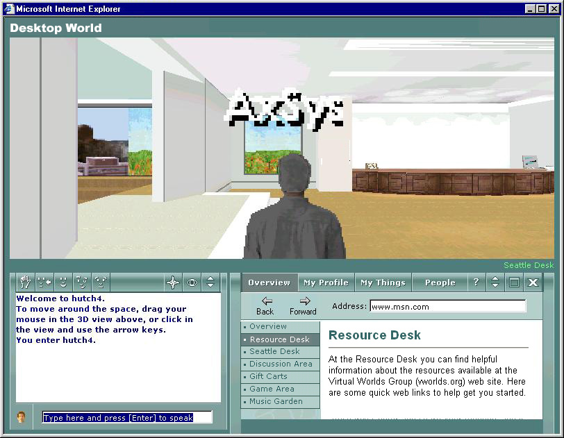
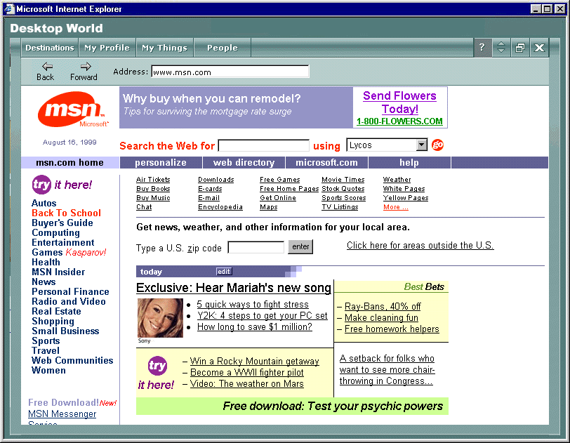
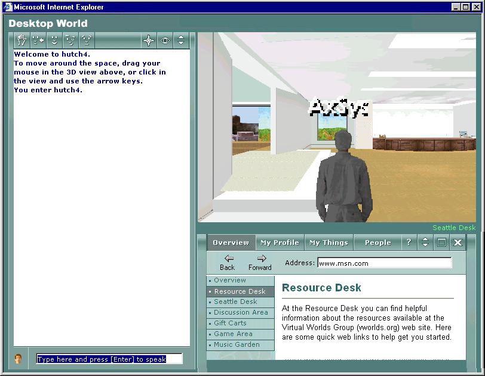

You can customize the Desktop World window by resizing sections of the window, called panes. To resize the panes, use the Desktop World resizing buttons (not the resizing buttons in Internet Explorer). Experiment with different views until you find one that suits you.

There are a variety of possible viewing options, such as an expanded 3-D view, a maximized Web pane view, and an expanded chat history view. Maximizing means to increase the size of a pane so that it fills the entire main window. Only the Web pane can be maximized.

Expanded 3-D view

Expanded Web pane view

Expanded chat history view
You can change the size of a pane by clicking its resize button. If a pane has been reduced, its resize button will increase the size of that pane. If a pane has been expanded, its resize button will reduce the size of that pane.
The 3-D pane is different in that it doesn't have its own resize button. Instead, the 3-D pane will expand or reduce based on the size of the other panes in the main window.
If the Web pane has been expanded, click the maximize button  . If the Web pane has been reduced, first click the resize button
. If the Web pane has been reduced, first click the resize button  to expand the pane, then click the maximize button.
to expand the pane, then click the maximize button.
To return to the standard view, click the resize button  .
.
Important When the Web pane is maximized, the chat history and 3-D areas are covered by that pane. You cannot see other members or their conversations, but your character is still visible to other members in the 3-D view. Your name remains on the Who Is Here list in the People menu, and other members can still send you notes and gifts. If you receive a note or gift, an exclamation point will appear on the My Things menu tab.
If you are not active in the 3-D view for seven minutes, your character will go into Sleep mode, alerting other members that you are still in Desktop World but are not participating with others in the 3-D area.